3.1. Introduction to OpenStreetMap
Course Objectives
This section provides an overview of OpenStreetMap as well as on how to contribute to OSM. By the end of this section you should be able to:
- Able to present an introduction to OpenStreetMap
- Learn how to create an account in OpenStreetMap
The following materials are designed to assist project managers and others leading trainings and workshops. If you are an individual interested in learning how to map with OpenStreetMap, please visit LearnOSM.org.
Learning Activities
OpenStreetMap Overview
OpenStreetMap is a collaborative project to create a free editable world map and is at the core of HOT’s mapping activities. You are free to use it for any purpose as long as you credit OSM and its contributors.

The power of OpenStreetMap is that it empowers anyone, anywhere in the world to add information to a collective map and use the data for any purpose. You can think of OSM as the “Wikipedia of maps” – it is an online database and global community of over 5 million registered users. This community collaborates to build a free and open map of the world to which anyone can contribute and which anyone can use in their own context. All that is needed to contribute to OSM is an internet connection and email address.
OpenStreetMap is open data: you are free to use it for any purpose as long as you credit OpenStreetMap and its contributors. If you alter or build upon the data in certain ways, you may distribute the result only under the same license. OpenStreetMap data is licensed under Open Data Commons Open Database License (ODbL), whereas the cartography of the map tiles is under CC-BY-SA.
There are many mapping applications and platforms offering their services as well, but here are some of the reasons why OpenStreetMap is still the best choice:
- OpenStreetMap is free and open so you won’t be charged anything to use it. A lot of spatial data providers charge a great amount of money to obtain spatial data from them. OpenStreetMap can be your alternative free of charge source. With OpenStreetMap, you do not need to depend on a government agency/institution or other spatial data providers to obtain spatial data.
- OpenStreetMap data is richer and more updated. This is possible because every OpenStreetMap user can add, edit, or delete OpenStreetMap data anywhere anytime. For example, if there is a restaurant that no longer exists but it is still mapped on OpenStreetMap, you, as an OpenStreetMap user, can easily delete the restaurant mapped on OpenStreetMap since it no longer exists. In some big cities, the OpenStreetMap data tends to be richer than remote small cities because there are no users mapping the latter. So, data availability and data update depend on OpenStreetMap users.
- OpenStreetMap comes in handy. OpenStreetMap provides a lot of tutorials for new users. OpenStreetMap’s user-friendly interface makes the mapping experience easy even for those who do not have a geography/mapping background.
- OpenStreetMap maps can be modified as needed. All OpenStreetMap data can be used and modified for your needs. For example, you want to make a tourist objects map in your area, you can download OpenStreetMap data and make a tourist objects map out of it.
OpenStreetMap can also be used to make disaster-related maps. It is often used as a tool to map disaster areas and as a basis for damage assessments. It is also often used as a mapping platform for disaster response because it allows participatory mapping. The resulting data in OpenStreetMap can then be used for things such as evacuation route planning, but OpenStreetMap data should be processed first using a GIS software (e.g. QGIS).
Creating OpenStreetMap Account
With OpenStreetMap (OSM) at the core of mapping activities, it is critical that all team members and participants have activated OSM accounts. This will be necessary before using many mapping tools such as HOT Tasking Manager, JOSM, and HOT Export Tool.
Skills and Technology Needed
- Computer
- Activated email account
- Internet connection
To get started, you will need to create an account on www.openstreetmap.org. Please use the “Sign Up” tab in the top right corner to begin.

Please fill in all the fields in the form. We recommend using an email you have easy access to e.g. your work email, as you will receive a confirmation email to verify your account. You will not receive any spam/marketing emails. Click the blue “Sign Up” button when finished.
| Tips |
|---|
| If a problem occurs, a problem message will appear. Make sure that the email you entered is the same as in the first two boxes and your password. If the box for the user name is red then someone else has already used the name and you have to look for another name. |

Next, please read and accept the contributor terms and agreements by selecting where you are based (France, Germany, or the Rest of the World), and clicking the blue “Agree” button on the bottom of your screen.

To activate your account, please now check your email and click on the link provided.
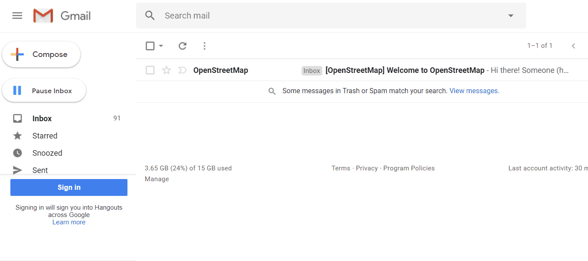
On the OpenStreetMap page, click Log In in the upper right corner. Enter your OpenStreetMap username and password then press Enter. You should now be logged in and you will see your username on the top right of the OpenStreetMap site.
Considerations for signing up large numbers of individuals
- Prior to beginning the OSM registration process, all individuals signing up for OSM accounts will need to have an existing and accessible email account. If registering a large group of individuals at one time, we recommend asking the group if they have accessible email accounts. When planning mapathons and trainings in areas where regular email use may be low, we also recommend planning for time in assisting individuals with setting up email accounts.
- Consider internet connectivity and capacity prior to registering large numbers of individuals for OSM accounts. Having individuals taking turns to register or running registration simultaneous to other activities can reduce the load on a slow internet connection.
- It is crucial that usernames and passwords are remembered by participants so that they can access other tools that require OSM accounts to log-in. We recommend encouraging participants to find a way of safely storing this information for future reference.
Using OpenStreetMap
After creating an OpenStreetMap account it is important to understand basic skills in navigating OpenStreetMap.
Navigate the Map
In the main view of the OpenStreetMap website, you will see a large map in it. You must be able to navigate the map so you can go to a location that you want. Here are the ways to navigate the map on OpenStreetMap:
- Use the left mouse to drag the map view. Left-click on your mouse, then hold and drag the map to the location that you want. If you don’t have a mouse, you can press and hold the right touchpad and then move the cursor.
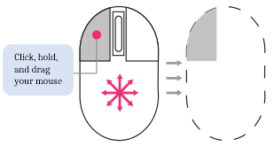
- Use (+) and (-) button in the upper right corner of the map to zoom in and zoom out the map view. You also can use your mouse scroll-wheel to zoom your map. Scroll your mouse up to zoom in, while scroll down to zoom out.
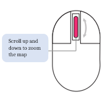
- To search the location based on the name, type the location name on the Search box in the upper left side on the screen. You can type it in the search column, then press Enter or click Go. After that a Search Results box will appear below the search column, then you can choose and click on the search. The map will automatically move to the location you chose.
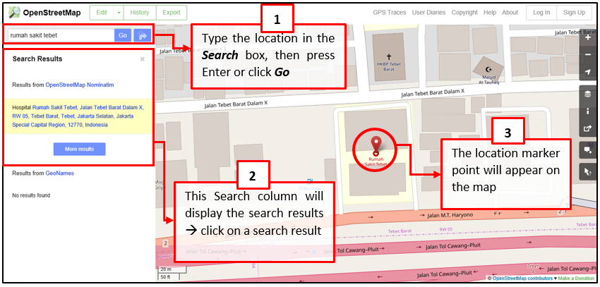
- To display your current location, you can go to the map panel to the right of the map and click Show My Location button. Then, the map will automatically display your current location point (blue dot). Make sure to enable the GPS on your laptop or computer to allow OSM to get your current location.
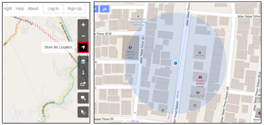
Change Different Style
OpenStreetMap contains geographic data from all over the world. Although stored in one database, the data can be displayed in several styles. The steps to change style map in OSM are as follows:
- Click Layers button in the right panel on the map.
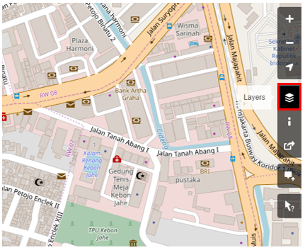
OSM has four types of layers with different functions, namely:
- Standard: This layer shows all the objects on the OSM map.
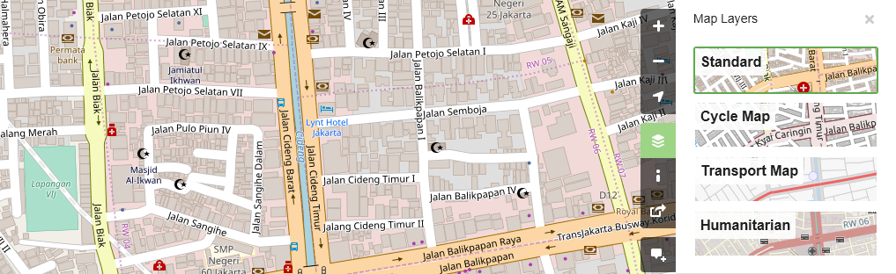
- Cycle Map : This layer emphasizes cycling routes and pedestrian roads.
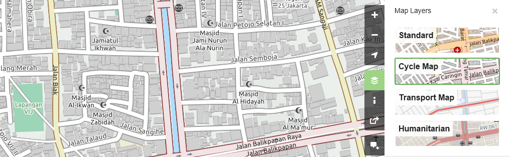
- Transport Map: This layer emphasizes transportation routes on the map such as highways and bus stop.
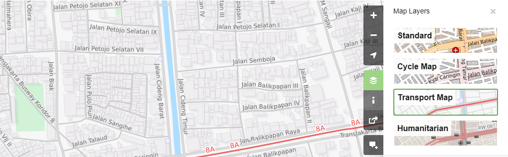
- Humanitarian: This layer emphasizes important objects or amenities on the map such as school, hospital, etc.
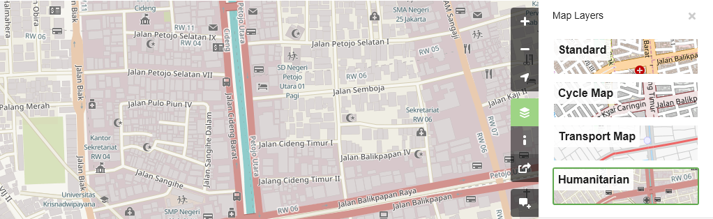
View object information in OpenStreetMap
In the OpenStreetMap page, besides see the current location and navigate the map, you also can see the feature information using Query Features. The steps to use Query Features are below:
- Click on Query Features button on the panel in the right. After you clicked it, you should see the question mark on your cursor. This indicates that the query features function is activated.
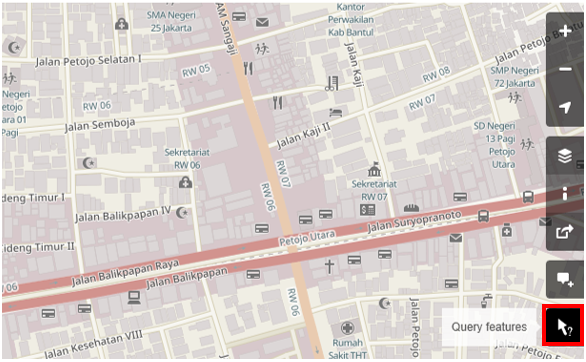
-
Now you can choose an object or location that you want to identify. For this example, we click on a governmental office building (Dinas Kesehatan) in Jakarta.
-
You should see a box appears in left corner that displays Nearby Features and Enclosing Features options. Nearby Features shows the description of any object that is closest to the location of your chosen point, while Enclosing features shows all the object information that have a close range location with your chosen point. Try to click one feature in the Nearby Features, click Governmental office Dinas Kesehatan for this example.
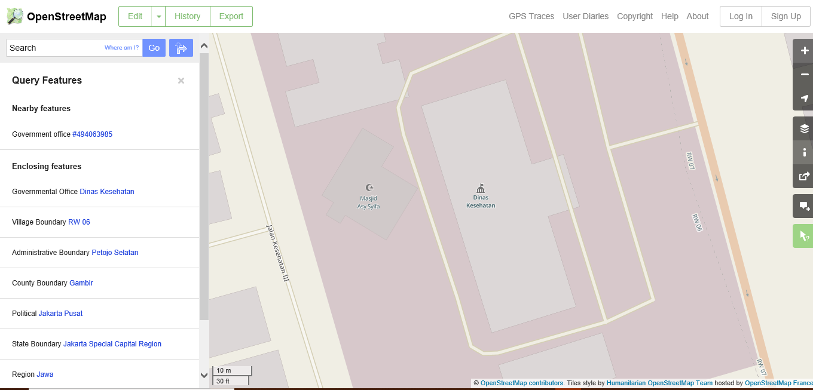
- After you clicked it, the information detail about Dinas Kesehatan building will appear in the left box. The information displayed is a tag or object attribute regarding general information objects such as object names, addresses, building levels, and others.
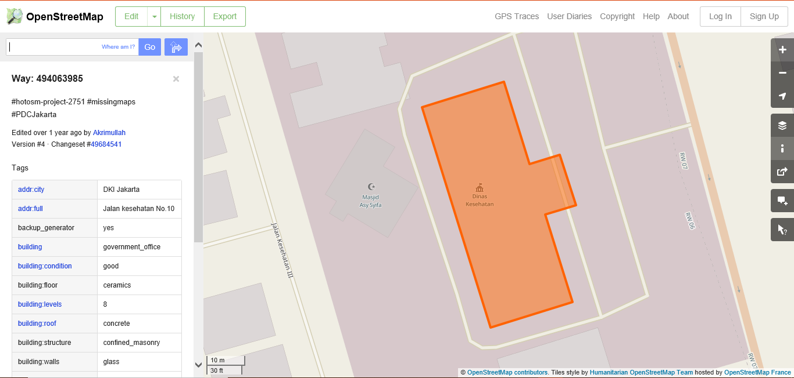
Share Location in OpenStreetMap
You can share links of your OpenStreetMap maps to others for various purposes, such as sharing the location of your current position with your colleagues and so on. To be able to share OpenStreetMap maps, the steps are as follows:
- Click the Share button on the right panel, then the Share column will appear.
- Check the Include marker to add the location marker point. You can move or drag the marker point to the desired location. Just click and hold the location marker then you drag to the desired location point. Another way is to shift the map so that the location marker is in the position you want.
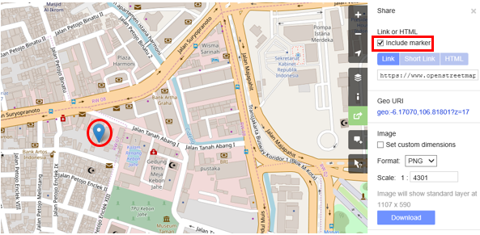
- Once the marker position has fixed, you can copy the link in the Link box and share the link according to your needs. You can also copy a shorter version of the link in the Short Link box or copy the HTML code in the HTML box.
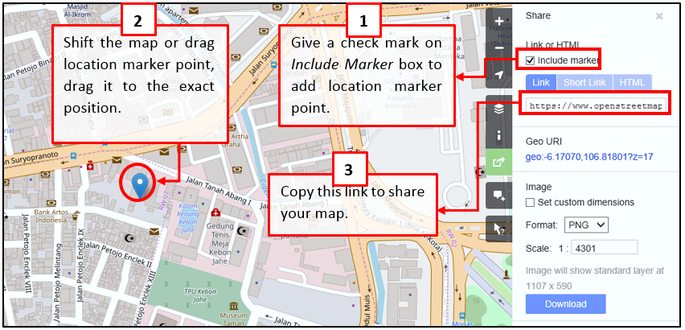
Export map as an image
Besides changing the layer map, you also can export the map as an image and choose the various format file such as .png, .jpg, .svg, and .pdf. The steps to export the map are as follows:
- Click on the Share icon in the right of your map. Then the Share column will appear on the right side of your screen.
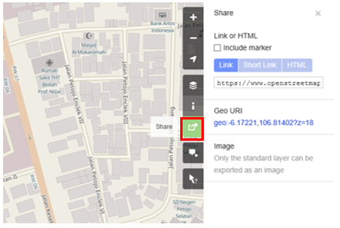
- After that, specify the area on the map that you want to export as an image. Give a check mark on the Set custom dimensions box in the Image section, then adjust the size of the box or adjust the scale in the Scale section.
Note : You can only export map as image if you set the Standard Layer view. If your map does not use the Standard Layer, you need to change it first on the Layers menu.
- You can choose the format of the export image in the Format dropdown menu. After that, click Download button to download the image and save the image to your folder location.
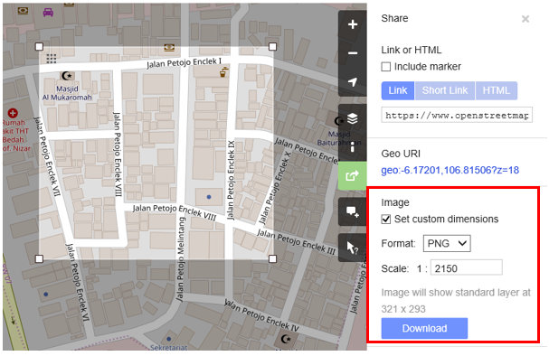
View the editing history in OpenStreetMap
When you edit objects or make changes to OpenStreetMap, you can see the editing history of objects in that area. The steps to see editing history are as follows:
- You can see the information by clicking on the History menu button on the top left of the map.
- After that, the Changesets column will appear at the bottom of the Search box and orange boxes will appear on the map that indicates which areas have just been edited. Changeset is a version of every change uploaded by OSM users. The information that we can see in the Changesets column is as follows:
- Changeset comment. It is recommended that you write the short comment when uploading changes or changeset. Comments can contain information about any changes that you made or specific hashtags.
- Upload time information.
- OSM username.
- Changeset number. This number is a unique number as the changeset identity.
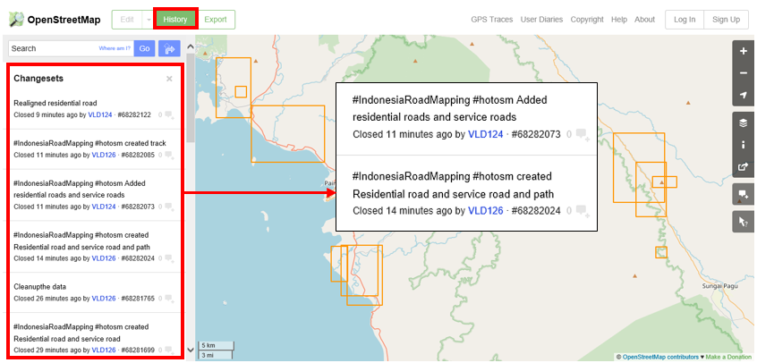
- You can click one of the changeset on the changeset list or you can immediately select the orange box on the map. After you select one of the changeset, you will get details about the changeset.
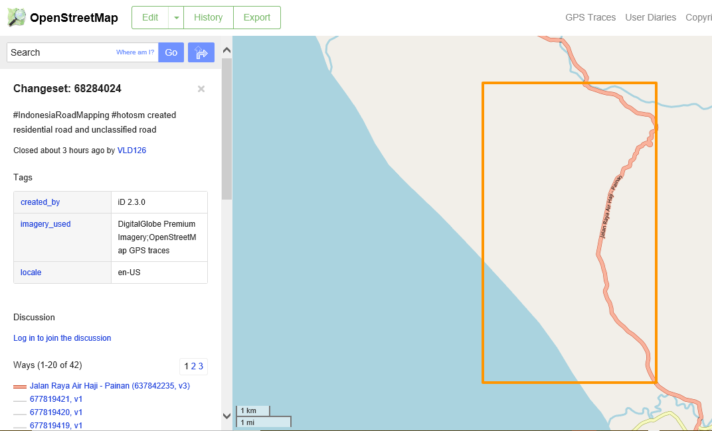
Basic Concept of OpenStreetMap Attributes
OpenStreetMap is a good way to convey information since it has visuals that are representative of the world. Maps often deliver information and answer questions better than words (i.e. Where is the nearest hospital? Who has the easiest access to hospital facilities?). Maps answer these questions with the aid of lines and polygons that represent actual on-the-ground information. OpenStreetMap, in particular, utilizes several data types, namely point, line, and polygon.
- Point/node in OpenStreetmap usually represents an object on the earth defined by its latitude and longitude. Usually, a node is used to represent a point-of-interest (POI) such as a restaurant, bench, water well, or fire hydrant. These POIs can usually be found inside a larger polygon such as a bench in a park or a shop inside a shopping mall. In OpenStreetMap, points also have varying symbols to represent their location depending on their type (e.g. a restaurant is symbolized by a fork and spoon).
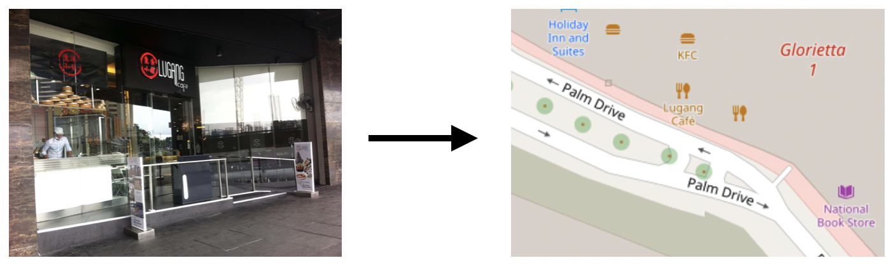
- Line/way in OpenStreetMap usually consists of several points or nodes that connect to each other. Lines usually represent roads, pedestrian lanes, canals, rivers, and other linear features.
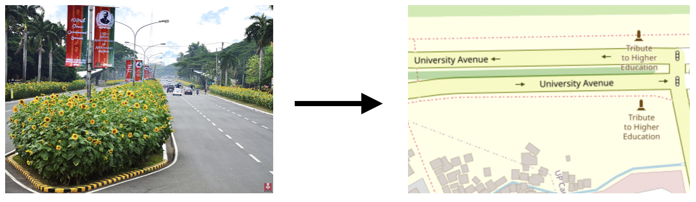
- Polygon/closed way in OpenStreetMap consists of several points or nodes that connect with each other, with its first and last nodes connecting to form a closed shape. You can see an example of a polygon/closed way in OpenStreetMap by looking at buildings, land uses, parks, and lakes.
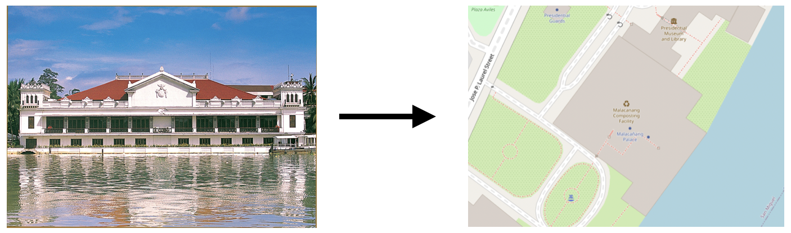
When you draw any feature (i.e. point, line, polygon) in OSM, you still need to add information about the object such as its name, address, and other supporting information. This helps other users when they utilize OSM data for various purposes. Information provided by users on OSM objects is called an attribute or tag.
An attribute/tag is like a label that you can place on an object. For example, if you draw a square, this is only a square without any object information. But you can add attributes to describe that object, for example you draw a square that you know as an apartment building that has 40 floors and is named ‘Luna Gardens’.
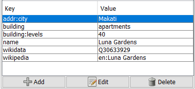
You can add as many attributes/tags as you want to an object as long as they are verifiable and correct. Attributes are stored as a pair of text, named Key and Value.
Key is the general information that explains the function of an object. One key can consist of many values. For example schools, mosques, and hospitals all have the same key which is amenities (important facilities). Although the three objects have different types of functions (or value), all three of them have the same key because they are all amenities.
Whereas Value is information that more specifically explains the type of an object. Because this value describes specific information about an object, there can only be one value for a specific key to describe the object. In OpenStreetMap, an attribute is added by formatting a key-value pair that represents physical features on the ground.
[Quiz] Check Your Knowledge
Type of quiz: Gapfill
| OSM Data : ODbL | (1)____ : CC-BY-SA |
| Road : (2)____ | Building : Polygon |
A commercial building named ShoeMarket has 5 floors, and operates only from 9AM to 11AM. It is located in Marikina City. Provide the missing key/value.
| Key | Value |
|---|---|
| (3)__ | ShoeMarket |
| building:levels | (4)___ |
| (5)__ | 09:00-11:00 |
| (6)__ | Marikina |
Answer: 1.Cartography tiles | 2.Line | 3.name | 4.5 | 5.opening_hours | 6.addr:city
Activity Checklist
By then end of this section, you should be able to:
- Explain what is OpenStreetMap (from concept, difference, and benefit)
- Create an account in OpenStreetMap
- Navigate within OpenStreetMap website
- Understand the basic concept of OpenStreetMap
Additional resources
- LearnOSM - Introduction to OSM
- OSM Wiki - Abot OpenStreetMap
- Two Minute Tutorial - What is OpenStreetMap?
- Two Minute Tutorials - How to sign up for OpenStreetMap
Slides
Step-by-step guide